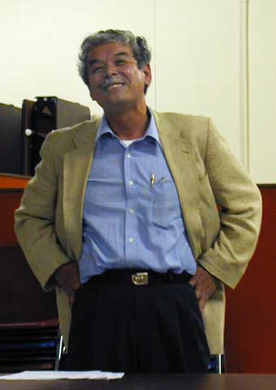
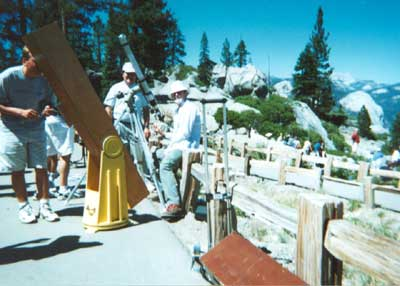

SJAA Ephemeris October 2000 |
SJAA Home |
Contents |
Previous |
Next
SJAA Ephemeris October 2000 |
SJAA Home |
Contents |
Previous |
Next
Tidbits from Here and There
For Sale
10 month old Meade 125 ETX with tripod and Autostar computer. Excellent condition. $1300 new, asking $900. Jim Linville 408-923-4746 CafromMd@aol.com
Unassembled AstroSystems Telekit cut for 14.5" f/5 mirror. No optics included. (I ended up using the mirror in another project.) Available now for pick up in Campbell. Information about AstroSystems Telekits: http://www.ezlink.com/~astrosys/ $900 Morris Jones (408) 836-4300 mojo@whiteoaks.com
From the August SJAA general meeting, Ken Miura describes his experiences volunteering as an amateur astronomer at the Onizuka Visitor Center on Mauna Kea. Ken joined SJAA member Jay Reynolds Freeman to talk about observing from Hawaii.
|

|
SJAA Member Steven Nelson shows the sun in white light using his own scope and in Hydrogen Alpha using the club's solar scope at the SJAA Yosemite Star Party on Saturday Afternoon.
|

|
Mail to:
Editors
Copyright © 2000 San Jose Astronomical Association
Last updated:
February 05, 2002
Previous | Contents | Next